Machine Learning
جزوهها و تمرینهای کلاس ماشین لرنینگ؛ با توضیح پیوسته، مثال و کد.
مشاهدهٔ یادداشتها ←با تأیید مدرس
دفتر کلاس · مسعود آهنگری
مطالب کلاس را با مثالهای تصویری و کد مرور کن، تمرینها را حل کن و با آزمونهای کوتاه، درکت را بررسی کن.
Instructor · Masoud Ahangary

بکشید و بچرخانید
نقاط سبز: نمونهها · نقطهٔ مرجانی: پرسوجوی q
نمای مفهومی را بکش و بچرخان؛ نقاط، دادهٔ واقعی تمرین نیستند.
کلاسها
هر کلاس، یک مسیر پیوسته از یادداشتها، تمرینها و آزمونهای کوتاه است.
جزوهها و تمرینهای کلاس ماشین لرنینگ؛ با توضیح پیوسته، مثال و کد.
روال یادگیری
با متن فارسی، نمودار، رابطهٔ ریاضی و مثالهای کوچک جلو برو.
محاسبهها را دنبال کن و در حالت تمرین، از راهنمایی استفاده کن.
آزمون را ثبت کن، دلیل پاسخها را بخوان و به بخش نیازمند مرور برگرد.
از داشبورد به کلاسها، پیشنویس پاسخها و نتایج آزمونها دسترسی داری.